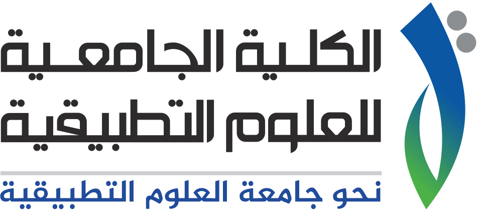
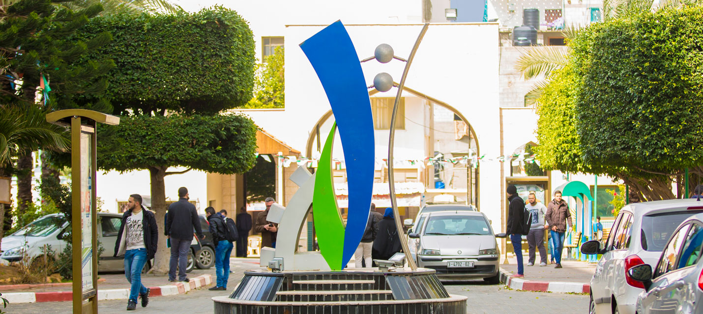

الصفحة الرئيسية
العمادات
اتصل بنا
طلب الالتحاق
أخبار الجامعة
احصائيات

-
عمادة الهندسة والنظم الذكية
- قسم الهندسة المدنية
- قسم الالكترونيات
- قسم هندسة الحاسوب
- قسم الهندسة الزراعية
- قسم الهندسة المعمارية والفنون
- قسم نظم المعلومات الجغرافية
-
عمادة تكنولوجيا المعلومات
- قسم الوسائط المتعددة
- قسم تطوير البرمجيات
-
عمادة التمريض وعلوم الصحة
- قسم علوم الصحة
- قسم التمريض
- قسم علوم التأهيل
-
عمادة ادارة المال والاعمال
- قسم الادارة
- قسم المحاسبة
-
عمادة العلوم الانسانية والاعلام
- قسم الاعلام
- قسم الدراسات القانونية
- قسم الدراسات الانسانية
-
عمادة التربية
- قسم العلوم التربوية
-
عمادة الدبلوم المهني والتعليم المستمر
- قسم الدبلوم المهني
مصطلحات هامة
- التقويم الاكاديمي
- مواعيد بدء الدراسة ونهايتها ومواعيد الامتحانات واي مواعيد تتعلق بالدراسة
- الانسحاب
- يعني ان الطالب قام بسحب المساق ويحق له استرداد الرسوم في فترة الاسترداد
- غير مكتمل
- يعني ان الطالب تقدم للامتحان النصفي ولم يتمكن من تقديم الامتحان النهائي ويحق له تقديم الامتحان النهائي في
وقت لاحق اذا تقدم بعذر مقبول